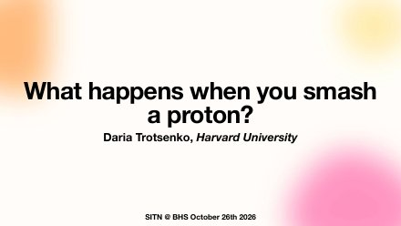
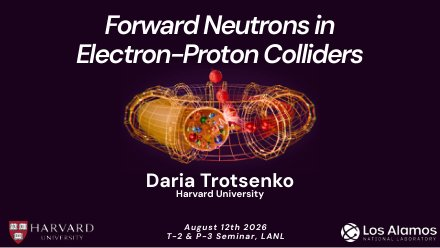
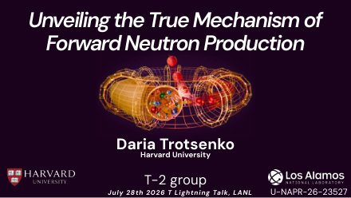
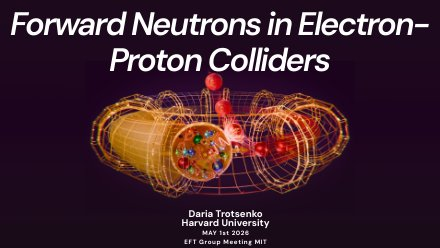
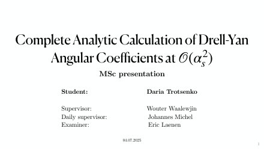
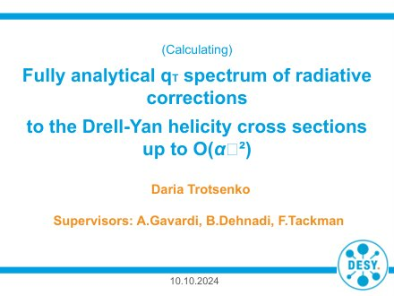
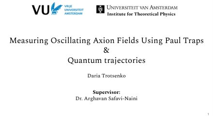
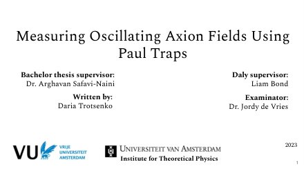
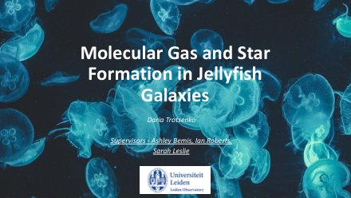

Talks
Seminars, group meetings, and public talks
2026
Complete Analytic Calculation of Drell–Yan Angular Coefficients at O(αs2)
EFT Group Meeting, Massachusetts Institute of Technology, Cambridge, MA (blackboard talk)
What happens when you smash a proton?
Public talk, Science in the News × Beacon Hill Seminars (online). A 40-minute talk for lifelong learners followed by a one-hour roundtable.

Forward Neutrons in Electron-Proton Colliders
Schwartz Group Meeting, Harvard University, Cambridge, MA
Forward Neutrons in Electron-Proton Colliders
T-2 / P-3 Seminar, Los Alamos National Laboratory, Los Alamos, NM

Unveiling the True Mechanism of Forward Neutron Production
T-Division Lightning Talk Competition, Los Alamos National Laboratory — first place

Forward Neutrons in Electron-Proton Colliders
EFT Group Meeting, Massachusetts Institute of Technology, Cambridge, MA

2025
Complete Analytic Calculation of Drell–Yan Angular Coefficients at O(αs2)
M.Sc. thesis defense, University of Amsterdam

2024
Fully Analytical qT Spectrum of Radiative Corrections to the Drell–Yan Helicity Cross Sections up to O(αs2)
DESY Summer Student Program final presentation, DESY, Hamburg

2023
Measuring Oscillating Axion Fields Using Paul Traps & Quantum Trajectories
Summer internship presentation, Institute of Physics, University of Amsterdam

Measuring Oscillating Axion Fields Using Paul Traps
B.Sc. thesis defense, University of Amsterdam & Vrije Universiteit Amsterdam

2022
Molecular Gas and Star Formation in Jellyfish Galaxies
LEAPS Summer Program final presentation, Leiden Observatory
